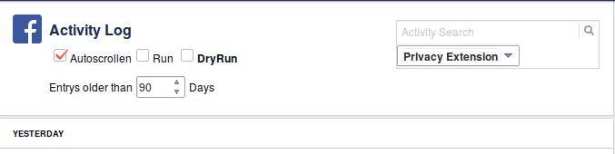

Facebook zaman tünelinde ki her şeyi silmek için
1-Firefox a greasemonkey i kurduktan sonra
Sonra profilden activity log kısmına hareket dökümü kısmına gelip sayfayı yenileyin.
karşınızda yeni alan oluşacak ordan nasıl sileceğinizi seçebilirsiniz.
Script şu bunu kurun .
çalışıyor denendi:
http://paste.ubuntu.com/15043256/
